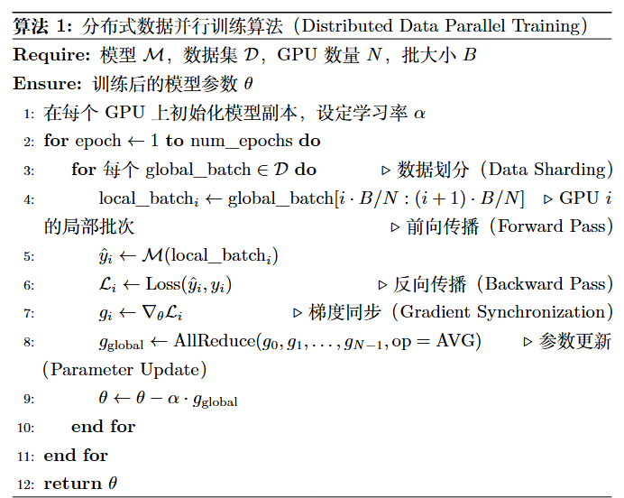
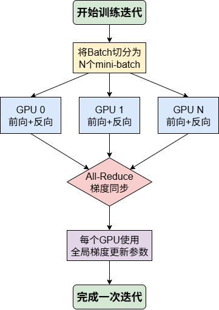
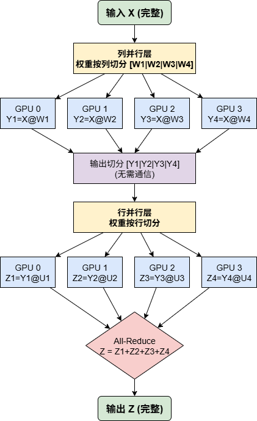
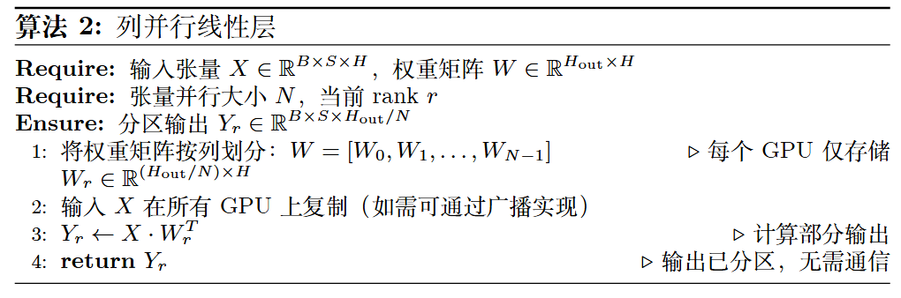
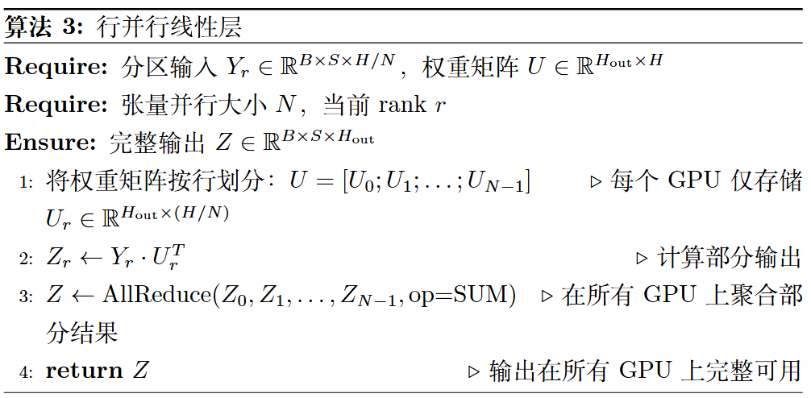
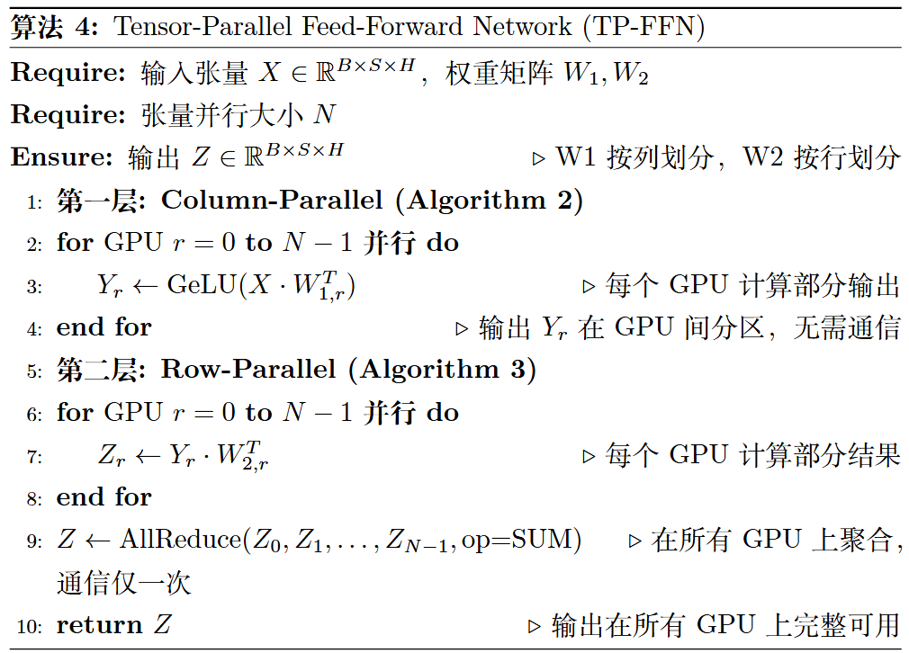
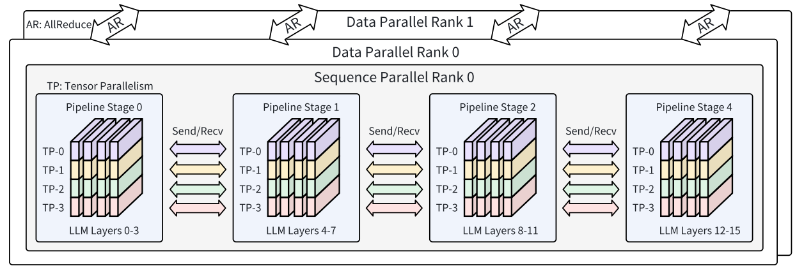

02.SPTD 并行与大模型(DONE)#
Author by: 于嘉阔
随着大语言模型参数量的持续增加，单机单卡的算力与显存已远远无法满足其训练需求。传统的数据并行或单一的模型并行策略，在面对数百亿乃至万亿参数的 Transformer 结构大模型时，效率和可扩展性均遇到瓶颈。为此，业界逐步形成了一套融合多种并行思路的混合框架，即 SPTD 并行——该并行策略主要用于对 Transformer 架构进行并行优化，通过多维度切分计算与存储负载，适配 Transformer 大模型的结构特性。
SPTD 并行之所以高效，是因为它涵盖的四个策略分别解决了 Transformer 大模型不同维度的挑战：序列并行（Sequence Parallelism, SP）专注于应对 Transformer 注意力机制中，序列长度增长带来的显存压力；流水线并行（Pipeline Parallelism, PP）解决了 Transformer 模型深度（层数）过大而无法单机容纳的难题；张量并行（Tensor Parallelism, TP）则攻克了 Transformer 单层宽度（如注意力头数量、前馈网络维度）过大导致的参数量瓶颈；而数据并行（Data Parallelism, DP）则从根本上扩展了数据吞吐能力，实现 Transformer 大模型训练的规模化加速。
通过混合使用这些策略，训练系统能够充分利用硬件资源，实现跨节点、跨设备的高效协同训练。在这一节中，我们将以 Transformer 结构为主的大模型为核心对象，系统阐述 SPTD 并行的基本概念、应用方式以及工程实践，帮助读者理解当前 Transformer 大模型训练的主流技术路径。
1. SPTD 并行概念#
SPTD 并行是一种面向超大规模 Transformer 结构大模型的混合并行训练范式，通过在不同维度上分解 Transformer 的计算与存储负载（如注意力层、前馈网络层的运算，以及序列数据的处理），并映射到不同层次的硬件架构，最大化算力利用率并降低通信瓶颈。
1.1 数据并行 DP#
数据并行是最为经典且广泛应用的并行策略，其核心思想可概括为“模型复制，数据分片”，在 Transformer 大模型训练中是提升吞吐率的基础手段。在数据并行模式下，每个参与训练的 GPU 都会保有一份完整的 Transformer 模型副本（包括所有注意力层、前馈网络层的参数）。训练开始时，一个大的数据批次（Batch）会被切分成多个子批次（mini-batch），并分发给不同的 GPU。每个 GPU 独立对自己分到的数据进行前向传播（计算 Transformer 各层的激活值与损失）、反向传播（计算各层参数的梯度），至此完成对模型参数的“修改意见”计算。
下一步是梯度同步，这一聚合步骤的有效性源于梯度计算的基本数学原理：
如公式所示，对于整个数据批次 \(D\) 的总损失 \(Loss(D)\)，其关于 Transformer 模型权重 \(w\)（如注意力层的查询/键/值矩阵、前馈网络的权重矩阵）的梯度，等价于各样本梯度的均值。这一原理允许每个 GPU 独立计算子批次梯度，再通过 All-Reduce 集体通信操作聚合所有梯度并取平均，得到全局梯度。最后，每个 GPU 用全局梯度更新本地模型副本，确保迭代前所有设备的 Transformer 参数完全一致。
早期的 DP 实现（如 PyTorch-DDP[1]）虽易于实现，但未解决 Transformer 大模型的显存瓶颈——每个 GPU 仍需承载完整的模型参数、梯度和优化器状态（如 Adam 优化器的动量项）。为攻克这一难题，DeepSpeed 的 ZeRO（Zero Redundancy Optimizer）[2]、PyTorch 的 FSDP（Fully Sharded Data Parallelism）[3]等全分片数据并行技术应运而生：它们不仅分片数据，还将 Transformer 的参数、梯度、优化器状态分片到所有 GPU。计算时，每个 GPU 通过 All-Gather 动态收集所需 Transformer 层的完整参数，计算后立即丢弃，大幅降低单卡峰值显存占用[2, 3]。这种“化整为零”的策略让训练千亿级 Transformer 大模型成为可能，尽管会引入一定通信开销。数据并行本质是“向外扩展（Scale-out）”策略，通过增加设备处理更多数据，是 Transformer 大模型训练集群的效率基石。

算法 1：Transformer 大模型的分布式数据并行训练下面介绍 DDP 算法在 Transformer 训练中的应用：如算法 1 及后续图 1 所示，DDP 核心流程分为四阶段：首先，大批次数据切分（Data Sharding）后分发给各 GPU（算法 1 第 4 行）；其次，各 GPU 在本地独立执行 Transformer 的前向传播（计算注意力、前馈网络激活值）与反向传播（计算各层梯度）（算法 1 第 5-7 行）；关键的第三步是梯度同步——所有 GPU 通过 All-Reduce 聚合梯度，确保各设备获得一致的全局梯度（算法 1 第 8 行）；最后，各 GPU 用全局梯度更新本地 Transformer 参数（算法 1 第 9 行），完成迭代并保持模型一致性。这种方式的优点是实现简单，瓶颈在于单卡需承载完整 Transformer 模型，参数规模过大时易显存不足。

图 1：Transformer 大模型数据并行单次迭代流程图1.2 张量并行 TP#
当 Transformer 大模型的单层规模（如注意力头数量过多、前馈网络维度过大）超出单卡容纳能力时，数据并行便无能为力。此时，张量并行通过“层内横向切分”，将 Transformer 单层的大规模矩阵运算分解到多个 GPU 协同完成，是优化 Transformer 层内计算的核心策略。最具代表性的实现是 NVIDIA 的 Megatron-LM[4]，它通过“列并行（Column Parallelism）+行并行（Row Parallelism）”的组合，适配 Transformer 前馈网络、注意力层的矩阵运算特性（如图 2 所示）。

图 2：张量并行应用于 Transformer 前馈网络的计算与通信流程图列并行与行并行针对 Transformer 线性层（如前馈网络的 \(Y = XA\)、注意力层的 \(QK^T\)）的矩阵运算设计：
列并行：将权重矩阵 \(A\) 按列切分（\(A = [A_1, A_2, ...]\)），每个 GPU 计算 \(Y_i = XA_i\)，最终通过拼接（Concat）得到完整输出 \(Y = [Y_1, Y_2, ...]\)，此过程无需额外通信；
行并行：将权重矩阵 \(A\) 按行切分（\(A = [A_1; A_2; ...]\)），同时将输入 \(X\) 按列切分（\(X = [X_1, X_2, ...]\)），每个 GPU 计算 \(Y_i = X_iA_i\)，最终通过 All-Reduce 聚合得到完整输出 \(Y = Y_1 + Y_2 + ...\)。
在 Transformer 前馈网络（FFN，公式为 \(Z = \text{Dropout}(\text{GeLU}(XW_1)W_2)\)）中，Megatron-LM 巧妙结合两种并行方式：
第一线性层（\(XW_1\)）采用列并行：权重 \(W_1\) 按列切分，完整输入 \(X\) 复制到各 GPU，并行计算 \(Y_r = \text{GeLU}(X \cdot W_{1,r})\)——此时 \(Y_r\) 是分散存储的，恰好匹配下一层行并行的输入需求；
第二线性层（\(Y W_2\)）采用行并行：权重 \(W_2\) 按行切分，各 GPU 直接用本地 \(Y_r\) 计算 \(Z_r = Y_r \cdot W_{2,r}\)，省去层间数据聚合（如 All-Gather）的通信开销；
最终通过一次 All-Reduce 聚合 \(Z_r\)，得到完整的 FFN 输出 \(Z\)（如算法 4 所示）。
这种设计让 Transformer 前馈网络的计算仅需一次通信，极大优化了效率。同理，张量并行也可应用于 Transformer 注意力层的 \(QK^T\)、\(KV\) 矩阵运算，通过切分查询/键/值矩阵，降低单卡计算与存储压力。

图 3：张量并行应用于 Transformer 注意力层的计算与通信流程图
算法 3：Transformer 线性层的行并行实现
算法 4：Transformer 前馈网络的张量并行实现1.3 流水线并行 PP#
与张量并行在 Transformer 层内“横向切分”不同，流水线并行是“纵向切分”策略：将 Transformer 大模型的上百层网络（如 GPT-3 的 96 层）按顺序切分成多个连续阶段，每个阶段由一个或一组 GPU 负责。训练时，数据像流水线一样流经各阶段——前一阶段完成 Transformer 某几层的计算后，将激活值传递给下一阶段，直至完成全量前向传播；反向传播则从最后一个阶段反向传递梯度至第一个阶段。
这种模式天然适配 Transformer“多层堆叠”的结构特性，非常适合跨节点、跨服务器场景——阶段间仅需传递激活值/梯度，对节点间通信带宽的要求远低于张量并行。
图 4：Transformer 大模型流水线并行核心步骤示意图
流水线并行的核心挑战是“流水线气泡（Pipeline Bubble）”：启动和排空阶段部分 GPU 空闲，导致资源利用率下降。为优化这一问题，现代方案（如 GPipe[5]、PipeDream[6]）引入“微批次（Micro-batch）+1F1B（One Forward, One Backward）”调度，适配 Transformer 的迭代训练特性：
将大批次数据切分成多个微批次，交错执行前向/反向传播；
一个微批次完成某阶段前向计算后，立即送入下一阶段，无需等待全批次；
某微批次满足反向计算条件（如后续阶段完成其前向）时，立即调度反向传播。
这种调度让 GPU 紧密衔接工作，减少空闲时间。此外，需通过模型分区算法平衡各阶段的 Transformer 层计算负载，避免“木桶效应”——例如将计算密集的注意力层与前馈网络层均匀分配到各阶段。流水线并行是连接多计算节点、构建 Transformer 大模型训练集群的关键技术。
1.4 序列并行 SP#
随着 Transformer 大模型对长文本理解能力的需求增长，输入序列长度（如从 4K 扩展到 128K）急剧增加，带来新的挑战：Transformer 自注意力机制的计算与显存复杂度为 \(O(L^2)\)（\(L\) 为序列长度），超长序列下 KV Cache、注意力矩阵的显存开销成为瓶颈。序列并行专为解决这一问题设计，它沿着“序列长度维度”切分输入数据，而非在 Transformer 的宽度（TP）或深度（PP）上切分，每个 GPU 仅处理序列的一个片段（Chunk）。
在 Transformer 层中，非依赖序列上下文的计算（如 FFN、LayerNorm），各 GPU 可独立处理本地序列片段，无需通信；核心挑战在于自注意力层——每个 Token 需关注全序列 Token，因此需通过通信实现全局交互。当前主流方案是“环形通信（Ring-based）”，例如 Ring Self-Attention[7]：
每个 GPU 持有序列片段对应的 Query（Q）、Key（K）、Value（V）张量；
计算注意力时，GPU 将本地 K/V 片段传递给环上的下一个 GPU，同时接收上一个 GPU 的 K/V 片段；
多轮环形传递后，每个 GPU 的 Q 片段可与全序列的 K/V 交互，计算出完整注意力结果。
这种方式将巨大的 KV Cache 分散存储到多 GPU，结合“选择性激活重计算”[8]进一步降低显存占用。更先进的 DeepSpeed-Ulysses[9]则通过 All-to-All 通信，在序列维度与注意力头维度间切换分片，适配 FlashAttention 等高效算子，让序列并行与 Transformer 注意力层的优化深度结合。序列并行是实现百万级上下文窗口 Transformer 大模型训练的核心技术。
1.5 多维并行#
为清晰理解 SPTD 四种并行策略的差异，从多个维度进行对比：
策略 |
核心思想 |
切分对象 |
主要解决问题 |
通信瓶颈 |
|---|---|---|---|---|
SP(序列并行) |
序列切分，逐块计算 |
Transformer 输入数据的序列维度 |
Transformer 注意力层中序列过长导致的 KV Cache、注意力矩阵显存爆炸 |
激活值（K/V）的环形传递或 All-Gather |
PP(流水线并行) |
层间并行，模型分段 |
Transformer 的多个连续层（深度维度） |
Transformer 模型层数过多，单卡无法容纳完整模型 |
阶段间的激活值/梯度传递 |
TP(张量并行) |
层内并行，张量切分 |
Transformer 单层的权重矩阵（宽度维度） |
Transformer 单层参数量过大（如注意力头、前馈网络维度高），单卡无法容纳 |
激活值的 All-Reduce（行并行）或拼接（列并行） |
DP(数据并行) |
模型复制，数据切分 |
训练数据 Batch |
Transformer 训练速度慢，需通过更大 Batch 提升吞吐率 |
梯度的 All-Reduce |
实践中，单一并行策略无法覆盖 Transformer 大模型的所有瓶颈，因此 SP、PP、TP、DP 常被组合使用：
传统“3D 并行”：DP（外层扩展吞吐）+ PP（中层切分深度）+ TP（内层切分宽度），适配千亿级 Transformer 模型；
加入 SP 后的“4D 并行”：在 3D 并行基础上，通过 SP 切分序列维度，解决超长上下文场景的显存问题，是当前万亿级 Transformer 大模型的主流范式。

图 5：Transformer 大模型 4D 并行（DP+PP+TP+SP）架构示例上图的 4D 并行架构从外到内分为三层，每层对应 Transformer 大模型的一个优化维度：
最外层（DP）：通过复制 Transformer 模型扩展吞吐率，不同 Data Parallel Rank 处理不同数据，迭代末通过 All-Reduce 同步梯度；
中间层（PP）：将 Transformer 按深度切分为多个 Pipeline Stage，跨节点传递激活值/梯度，解决层数过多问题；
最内层（TP+SP）：在单机多卡环境下，TP 切分 Transformer 单层的权重矩阵（如注意力头、前馈网络），SP 切分输入序列，共同优化层内计算与显存压力。
这种分层策略实现了“吞吐率（DP）、模型深度（PP）、模型宽度（TP）、序列长度（SP）”四个维度的全面扩展，是 Transformer 大模型训练的标准并行框架。
2. Transformer 结构特征#
Transformer 结构大模型（如 GPT 系列、LLaMA、BERT、PaLM）是当前大语言模型的主流范式，其核心特征围绕“全参数参与计算、多层堆叠结构、注意力机制依赖”展开，这些特征也决定了 SPTD 并行的优化方向：
（1）全参数参与计算
Transformer 大模型的所有参数（注意力层的 Q/K/V 矩阵、前馈网络的权重、LayerNorm 参数等）均参与前向与反向传播，保证了模型的表达能力与优化一致性。但随着参数量从数十亿扩展到万亿级，单卡显存无法承载完整模型——这也是 TP、DP（全分片）等并行策略需解决的核心问题。
（2）显存与通信压力集中
训练时，Transformer 不仅需存储参数、梯度、优化器状态，还需保存注意力层的 KV Cache、各层激活值（用于反向传播），显存开销远高于传统模型。同时，分布式训练中，参数同步（TP 的 All-Reduce）、激活值传递（PP 的跨阶段通信）带来巨大通信负担，尤其跨节点场景下，通信延迟易成为瓶颈。
（3）结构规则化，适配并行切分
Transformer 的层结构具有高度重复性（如“注意力层+前馈网络层”的循环堆叠），单层内部的计算模式固定（矩阵乘法、LayerNorm、激活函数）。这种规则性让 SPTD 并行可精准适配：TP 切分层内矩阵运算、PP 切分多层堆叠、SP 切分序列数据、DP 切分训练数据，无需复杂的结构适配。
（4）长上下文依赖带来的序列挑战
Transformer 的注意力机制依赖“全序列交互”，序列长度直接影响模型的上下文理解能力。但随着序列长度增加，注意力计算复杂度呈平方增长，KV Cache 的显存开销也急剧上升——这一挑战专门由 SP 并行解决，通过序列切分分散存储与计算压力。
（5）高算力与能耗需求
训练千亿级 Transformer 大模型需数千块 GPU 长期运行（如 GPT-3 训练消耗约 3.64E23 FLOPs），算力与能耗成本极高。SPTD 并行通过提升硬件利用率（如 PP 减少 GPU 空闲、TP/SP 降低显存浪费），间接降低单位训练成本，是平衡性能与成本的关键。
这些特征表明：Transformer 结构大模型的训练需多维度并行优化，而 SPTD 并行通过针对性解决“参数规模、层数、序列长度、吞吐率”问题，成为支撑其可扩展训练的核心技术。
3. SPTD 在大模型中应用#
Transformer 结构大模型因“参数量大、层数深、序列长度长”，训练过程面临显存不足、通信频繁、梯度同步开销高等问题。传统单一并行策略（如仅用 DP 或 TP）难以兼顾效率与可扩展性，而 SPTD 并行通过多维度协同优化，成为 Transformer 大模型训练的核心方案：
（1）SP 适配 Transformer 的长序列注意力计算
Transformer 的注意力层是长序列场景的主要瓶颈（\(O(L^2)\) 复杂度）。SP 通过序列切分，将 KV Cache 与注意力矩阵分散到多 GPU：例如序列长度为 32K 时，用 8 张 GPU 切分后，单卡仅需处理 4K 序列片段的 KV Cache，显存占用降至 1/8。同时，环形通信或 All-to-All 通信保证了注意力“全序列交互”的正确性，结合 FlashAttention 等算子，可实现 128K 甚至更长序列的高效训练（如 GPT-4 的长上下文版本）。
（2）TP+PP 优化 Transformer 的多层与层内结构
Transformer 的“多层堆叠+单层大参数量”特性，需 TP 与 PP 协同优化：
TP 针对单层大参数量：如 GPT-3 的注意力层有 12 个注意力头、前馈网络维度为 4096，TP 将 Q/K/V 矩阵按头切分、前馈网络权重按列/行切分，使单卡仅承载 1/4 或 1/8 的单层参数；
PP 针对多层堆叠：将 GPT-3 的 96 层切分为 8 个 Pipeline Stage，每个 Stage 处理 12 层，跨节点传递激活值，解决“单卡无法容纳全量层数”问题。
两者结合可将 Transformer 的“层内+层间”压力分散到多设备，是千亿级模型训练的基础。
（3）全分片 DP 降低 Transformer 的显存冗余
传统 DP 中，每个 GPU 存储完整 Transformer 模型，显存冗余高。ZeRO、FSDP 等全分片 DP 技术，将 Transformer 的参数、梯度、优化器状态按层分片：例如 16 张 GPU 训练时，单卡仅存储 1/16 的参数，显存占用大幅降低。同时，计算时通过 All-Gather 动态收集所需层参数，保证前向/反向的正确性——这种方式让单卡可训练原本需 16 卡承载的模型，极大提升了显存利用率。
（4）工程实践中的效率验证
SPTD 并行在 Transformer 大模型训练中已被广泛验证：
Megatron-LM 用“TP+PP+DP”实现了 1750 亿参数 GPT-3 的训练，在 1024 张 GPU 上达到接近线性的加速比；
DeepSpeed 结合 ZeRO（全分片 DP）与 SP，实现了 1 万亿参数模型的训练，显存占用降低 50%以上；
PaLM 训练中，“DP+PP+TP+SP”的 4D 并行策略，让 5400 亿参数模型在 6144 张 TPU 上高效运行，单轮训练时间缩短 30%。
4. 总结与思考#
SPTD 并行通过“序列（SP）、张量（TP）、流水线（PP）、数据（DP）”四个维度的协同优化，精准适配了 Transformer 结构大模型的核心特征——针对全参数参与计算设计 TP/全分片 DP，针对多层堆叠设计 PP，针对长序列注意力设计 SP，最终实现了“显存占用降低、通信效率提升、硬件利用率提高”的目标。
它不仅解决了 Transformer 大模型从百亿到万亿级参数量的训练瓶颈，还为长上下文场景（如百万级 Token）提供了可行的并行方案。未来，随着 Transformer 模型规模进一步扩大，SPTD 并行与“算子优化（如 FlashAttention）、激活重计算、异构硬件（GPU/TPU/DPU）”的结合，将成为大模型训练效率提升的关键方向。
参考与引用#
Li, S., Zhao, Y., Varma, R., Salpekar, O., Noordhuis, P., Li, T., ... & Smith, J. (2020). Pytorch distributed: Experiences on accelerating data parallel training. arXiv preprint arXiv:2006.15704.
Rajbhandari, S., Rasley, J., Ruwase, O., & He, Y. (2020). Zero: Memory optimizations toward training trillion parameter models. In SC20: International Conference for High Performance Computing, Networking, Storage and Analysis (pp. 1-16). IEEE.
Zhao, Y., Gu, A., Varma, R., Luo, L., Huang, C. C., Xu, M., ... & Shleifer, S. (2023). Pytorch fsdp: Experiences on scaling fully sharded data parallel. Proceedings of the VLDB Endowment, 16(12), 3848-3860.
Shoeybi, M., Patwary, M., Puri, R., LeGresley, P., Casper, J., & Catanzaro, B. (2019). Megatron-lm: Training multi-billion parameter language models using model parallelism. arXiv preprint arXiv:1909.08053.
Huang, Y., Cheng, Y., Bapna, A., Firat, O., Chen, D., Chen, M., ... & Le, Q. V. (2019). Gpipe: Efficient training of giant neural networks using pipeline parallelism. Advances in neural information processing systems, 32.
Narayanan, D., Harlap, A., Phanishayee, A., Seshadri, V., Devanur, N. R., Ganger, G. R., ... & Zaharia, M. (2019). Pipedream: generalized pipeline parallelism for dnn training. In Proceedings of the 27th ACM symposium on operating systems principles (pp. 1-15).
Li, S., Xue, F., Baranwal, C., Li, Y., & You, Y. (2023). Sequence parallelism: Long sequence training from system perspective. In Proceedings of the 61st Annual Meeting of the Association for Computational Linguistics (Volume 1: Long Papers) (pp. 2391-2404).
Korthikanti, V. A., Casper, J., Lym, S., McAfee, L., Andersch, M., Shoeybi, M., & Catanzaro, B. (2023). Reducing activation recomputation in large transformer models. Proceedings of Machine Learning and Systems, 5.
Jacobs, S. A., Tanaka, M., Zhang, C., Zhang, M., Aminabadi, R. Y., Song, S. L., ... & He, Y. (2024). System optimizations for enabling training of extreme long sequence transformer models. In Proceedings of the 43rd ACM Symposium on Principles of Distributed Computing (pp. 121-130).